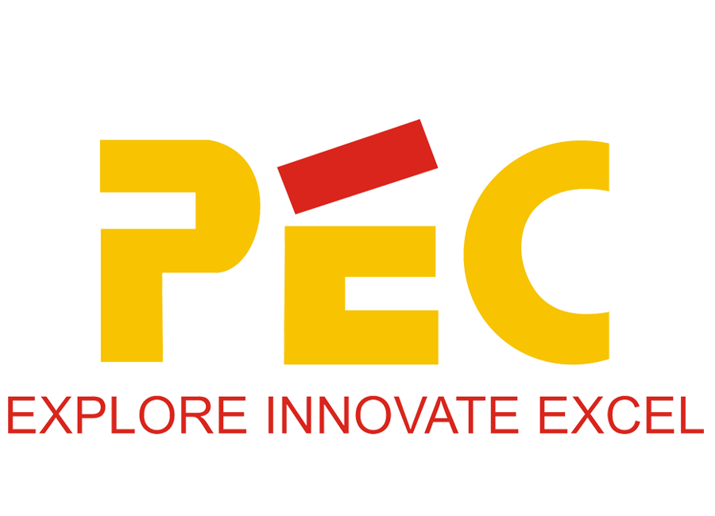
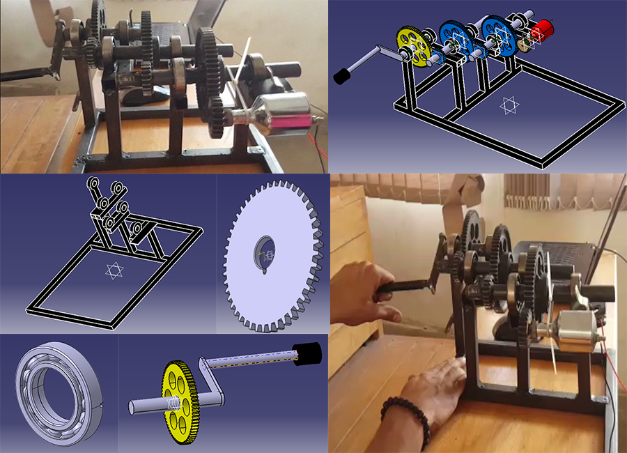
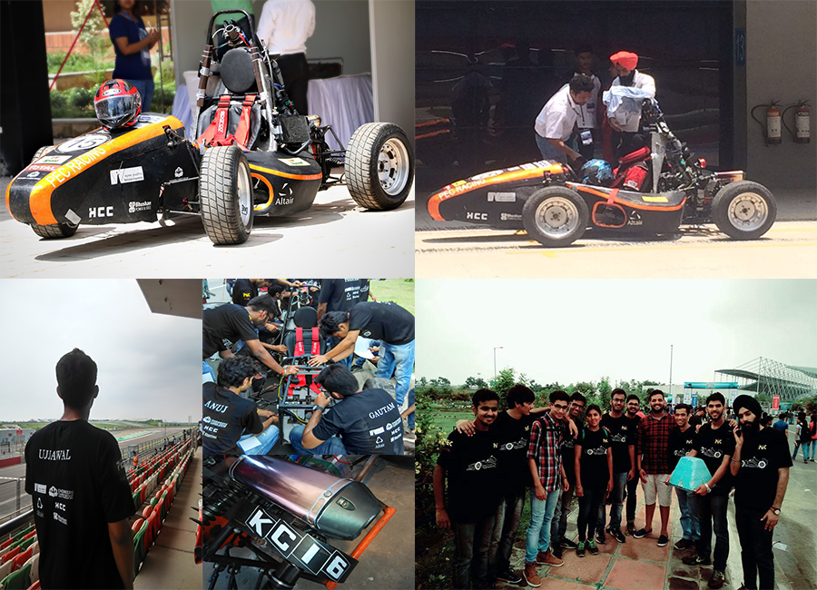

Education
Coursework
Introduction to Data Science · Introduction to Machine Learning · Introduction to Data Analysis and ML · Introduction to NLP · Practical AI · Data Management · Big Data Processing · Ethical & Legal Issues in DS · Engineering Management
Internship — Atos Z Data Inc.
Data Science Intern
Developed functional-level monitoring framework for a novel NLP-based product. Surveyed 10+ SOTA unsupervised drift detection papers. Integrated monitoring in a containerized Kubeflow pipeline; refactored Python scripts to incorporate Prometheus-Grafana for production data observability.
Projects
California Drought Analysis & Prediction
Examined 21 years of meteorological and drought severity data (400K+ instances). Employed Random Forests + Voting Ensemble for drought detection (85% accuracy) and OneVsRest Classifier for intensity classification (73% F1-score) across 5 Palmer Drought Severity Index classes.
Twitter Sentiment Analysis & Stock Market Prediction
Condensed 5-year tweet data (3M+ samples), computed sentiment via VADER & TextBlob, established significance via Spearman Coefficient. Built LSTM multivariate time-series forecasting model combining price and sentiment — improved prediction error by 25%.
ASL Image Classification
Model performance comparison study for CNNs classifying 87,000 ASL images into 29 classes. Investigated kernel sizes, activation functions (ReLU, Swish, Mish), and image augmentation. Achieved 97.23% (non-augmented) and 82.44% (augmented) accuracy.
Document Classification — Multimodal (Image + Text)
Retrieved textual features via OCR and combined with image features for document classification, achieving 83.31% accuracy.
Responsibilities
- UMBC Global Ambassador — built communication lines with incoming international students, facilitated academic and social integration.
- Graduate Assistant — assisted professors with course content, grading, and one-on-one tutoring sessions.
- Student Manager, UMBC Basketball — supported coaching staff with practice coordination, player routines, and team operations.

Research Internship — Cranfield University
AVEC, School of Aerospace, Transport and Manufacture
Mentored by Dr. Stefano Longo & Dr. Manlio Morganti. Worked on development of HIL test rig for thermal management in Electric and Hybrid vehicles.
Minor Project

Suspension-Equipped All-Terrain Robot
Modeled and fabricated a custom suspension-equipped robot with a pick-and-place gripper. DC motors for drive, Johnson motor and servo for gripper, Arduino Mega 800, LiPo 12V 2200mAh battery. Full CAD assembly in CATIA V5.
Capstone Project

Portable Mechanical Battery Charger
Designed and fabricated a human-powered mechanical charger using a 1:27 compound gear train (3 pairs of 69T/23T spur gears) driving a dynamo, generating 12V output via a diode bridge rectifier.
Society of Automotive Engineers

SUPRA SAEINDIA 2016 — Buddh International Circuit
Developed and validated tubular space-frame chassis via structural and harmonic FEA. Designed gear shifter and bell cranks. Led Business Presentation event. National ranking: 29th of 145 teams.
Key Coursework
Computer Programming · OOP · Mathematics · Mechanics · Fluid Mechanics · Material Science · Thermodynamics · Heat Transfer · Refrigeration & Air Conditioning · Manufacturing Processes · Strength of Materials · Design of Mechanical Systems · Dynamics of Machines · Mechanical Vibration · Industrial Automation & Robotics · CADD & M · Automobile Engineering